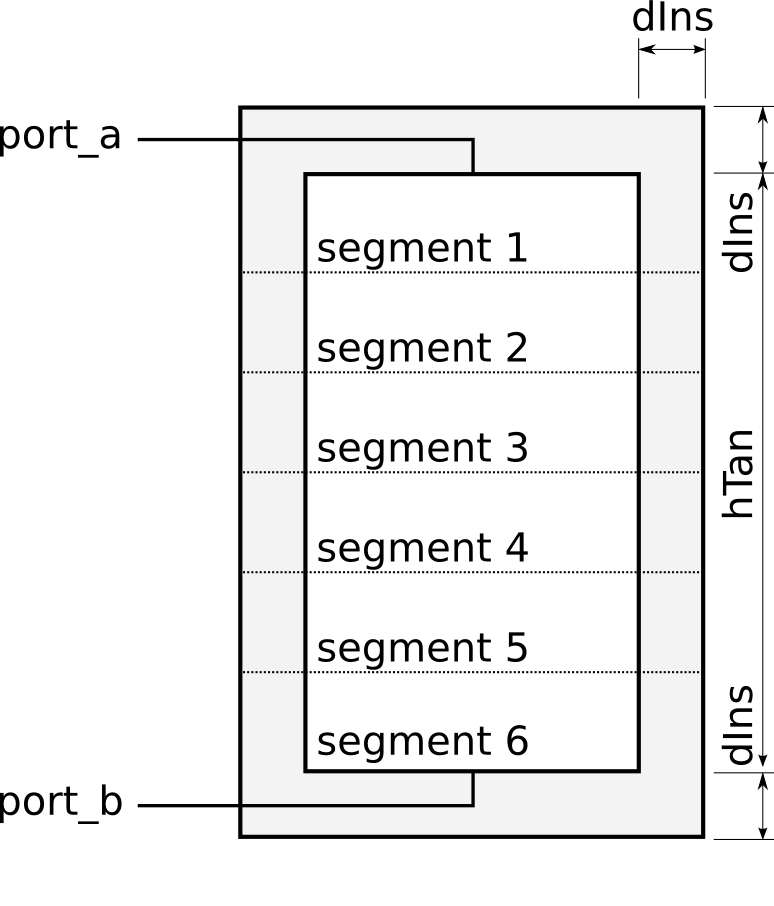
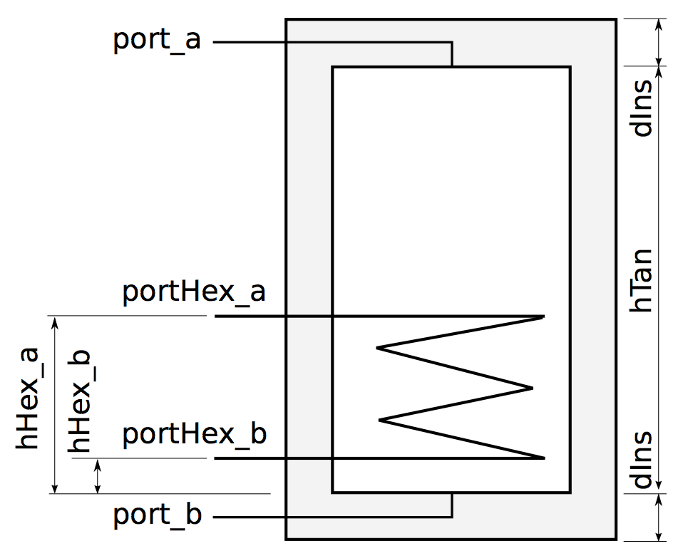

User's Guide
This user's guide describes the storage tank models. There are three storage tank models in the this package.
| Model name | Description |
|---|---|
| Buildings.Fluid.Storage.Stratified |
This is a model of a stratified storage tank as shown in the figure below. 
The tank uses several volumes to model the stratification.
Heat conduction is modeled between the volumes through the fluid,
and between the volumes and the ambient.
The port
The tank has
The heat ports outside the tank insulation can be
used to specify an ambient temperature.
Leave these ports unconnected to force adiabatic boundary conditions.
Note, however, that all heat conduction elements through the tank wall (but not the top and bottom) are connected to the
heat port |
| Buildings.Fluid.Storage.StratifiedEnhanced |
The model is identical to Buildings.Fluid.Storage.Stratified, except that it adds a correction that reduces the numerical dissipation. The correction uses a third order upwind scheme to compute the outlet temperatures of the segments in the tank. This model is implemented in Buildings.Fluid.Storage.BaseClasses.ThirdOrderStratifier. |
| Buildings.Fluid.Storage.StratifiedEnhancedInternalHex |
This model is identical to Buildings.Fluid.Storage.StratifiedEnhanced except that it adds a heat exchanger to the tank. The modifications consist of adding a heat exchanger and fluid ports to connect to the heat exchanger. The modifications allow to run a fluid through the tank causing heat transfer to the stored fluid. A typical example is a storage tank in a solar hot water system. The heat exchanger model assumes flow through the inside of a helical coil heat exchanger, and stagnant fluid on the outside. Parameters are used to describe the heat transfer on the inside of the heat exchanger at nominal conditions, and geometry of the outside of the heat exchanger. This information is used to compute an hA-value for each side of the coil. Convection calculations are then performed to identify heat transfer between the heat transfer fluid and the fluid in the tank.
The location of the heat exchanger can be parameterized as follows:
The parameters 
Optionally, this model computes a dynamic response of the heat exchanger.
This can be configured using the parameters
The heat exchanger is implemented in Buildings.Fluid.Storage.BaseClasses.IndirectTankHeatExchanger. |
Extends from Modelica.Icons.Information (Icon for general information packages).